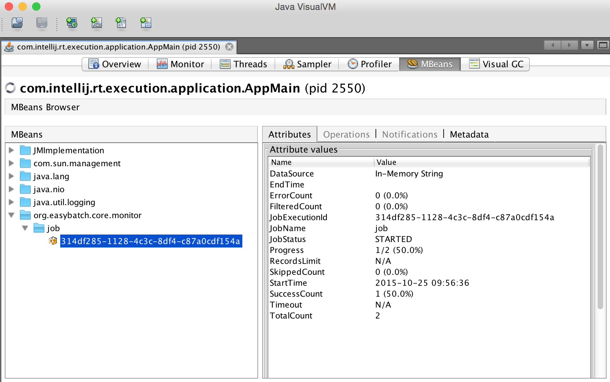

User Guide
Create a batch job
The JobBuilder API is the main entry point to configure and create batch jobs:
Job job = new JobBuilder()
.named("myJob")
.build();
// Or
Job job = JobBuilder.aNewJob()
.named("myJob")
.build();
By default, the job name is "job".
Run the batch job
Once you have created a batch job instance, you can run it as follows:
//Either by calling the job directly
JobReport jobReport = job.call();
// Or using the org.easybatch.core.job.JobExecutor API
JobReport jobReport = JobExecutor.execute(job);
// Or using a java.util.concurrent.ExecutorService
ExecutorService executorService = ..;
JobReport jobReport = executorService.submit(job).get();
When the job is finished, you get an execution report with several statistics and metrics about the job run.
Job parameters
Easy Batch jobs can be configured with the following parameters:
| Parameter | Type | Default | Description |
|---|---|---|---|
| name | String | job | the job name |
| strict mode | boolean | false | abort job on first error |
| silent mode | boolean | false | mute all loggers |
| jmx mode | boolean | false | enable JMX monitoring |
| timeout | long | +∞ | abort job when the timeout is exceeded |
| skip | long | 0 | number of records to skip |
| limit | long | +∞ | maximum number of records to process |
All parameters can be set through the JobBuilder. Here is an example:
Job job = JobBuilder.aNewJob()
.named("myJob")
.silentMode(true)
.strictMode(true)
.jmxMode(true)
.timeout(1, TimeUnit.HOURS)
.skip(1)
.limit(1000)
.build();Enable JMX monitoring
Easy Batch allows you to monitor job execution and progress at runtime using JMX.
The JMX MBean named org.easybatch.core.monitor:name=YourJobName,id=YourJobExecutionId
exposes the following attributes:
- The batch start and end times
- The data source being processed
- The job status
- The total number of records to process (if available)
- The total number of skipped, filtered, error and successfully processed records
- And the execution progress
In order to register this JMX MBean, you should enable JMX mode at application startup:
Job job = new JobBuilder()
.jmxMode(true)
.build();You can then use any standard JMX compliant tool such as VisualVM to visualize monitoring attributes.
The screenshot below shows an example of job monitoring using VisualVM:

JMX monitoring is disabled by default. You can find a complete tutorial about this feature in the JMX tutorial.
Listening to JMX notifications
When you enable JMX mode, the job monitor will automatically send notifications about execution progress. In order to listen to these notifications, you need to:
- Specify the JMX port on which the job monitor should send notifications. This can be done using the
com.sun.management.jmxremote.portJVM parameter - Use a
JobMonitorProxywith aJobMonitoringListenerto handle notifications
Easy Batch provides a simple command line listener called CliJobMonitoringListener in the easybatch-tools module. This listener will print execution progress to the standard output.
Schedule jobs
Using a ScheduledExecutorService
Easy Batch jobs implement the java.util.concurrent.Callable interface so they can be easily scheduled
using the java.util.concurrent.ScheduledExecutorService API:
Job job = new JobBuilder().build();
ScheduledExecutorService scheduledExecutorService = Executors.newScheduledThreadPool(5);
ScheduledFuture scheduledFuture = scheduledExecutorService.schedule(job, 5, TimeUnit.SECONDS);In this example, the job will be scheduled to run in 5 seconds.
The advantage of java.util.concurrent.ScheduledExecutorService
is that it allows you to schedule jobs without requiring any third party library. But this service is limited in terms of scheduling features since it does not support cron expressions for example.
That's why Easy Batch provides an extension to schedule jobs with the popular Java scheduler Quartz.
Using Quartz
The JobScheduler API provided in the easybatch-quartz module allows you to schedule job execution:
- At a fixed point of time using
scheduleAt(Job job, Date when) - Repeatedly with predefined interval using
scheduleAtWithInterval(Job job, Date when, int interval) - Using unix cron-like expression with
scheduleCron(Job job, String cronExpression)
You can find a complete tutorial on how to schedule Easy Batch jobs with Quartz here.
The job report
Easy Batch records several metrics during record processing and provides a complete report at the end of execution.
This report is an instance of the JobReport class and contains the following information:
- The job start time, end time and duration
- The job execution status
- The data source name
- The total number of records
- The number of skipped and filtered records
- The number of records processed with errors
- The number of records successfully processed
- The record processing time average
- And the computation result if any
Format a job report
You can format reports using the JobReportFormatter interface.
The HtmlJobReportFormatter implements this interface to format reports in HTML:
String htmlReport = new HtmlJobReportFormatter().formatReport(report);The following is a sample HTML report (click on the image for a live HTML demo):
To use the HtmlJobReportFormatter, you should add the easybatch-tools module to your dependencies:
<dependency>
<groupId>org.easybatch</groupId>
<artifactId>easybatch-tools</artifactId>
<version>4.1.0</version>
</dependency>You can also provide your own implementation of the JobReportFormatter interface to format reports to custom formats.
Merge job reports
When you run multiple jobs to process a data source in parallel, each job will generate a partial report for the data partition it has processed.
You may want to merge partial reports into a consolidated one. This is where the JobReportMerger comes to the rescue:

The merged report is defined as follows:
- The start time is the minimum of start times
- The end time is the maximum of end times
- The total records is the sum of total records
- The total skipped records is the sum of total skipped records
- The total filtered records is the sum of total filtered records
- The total error records is the sum of total error records
- The total success records is the sum of total success records
- The final job result is a list of all job partial results
- The final data source name is the concatenation (one per line) of partial data sources names
To use the job report merger, first you need to add the easybatch-tools module to your dependencies:
<dependency>
<groupId>org.easybatch</groupId>
<artifactId>easybatch-tools</artifactId>
<version>4.1.0</version>
</dependency>Then you can use the following snippet to get a merged report:
JobReportMerger reportMerger = new DefaultJobReportMerger();
JobReport finalReport = reportMerger.mergeReports(report1, report2);You can find an example of how to use the report merger in the Parallel jobs tutorial.